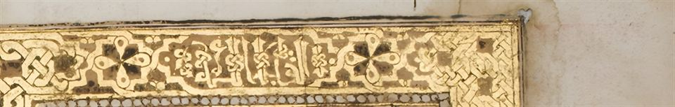

باقٍتامصور جزئية
- الناسخ
- يوسف بن رضوان الشاطبي، وقد ذكر اسمه في دعاء بأول المصحف مع المصادر التي اعتمدها
- المكان
- «شمال أفريقيا» دون تحديد
- اليوم
- لندن، مجموعة خليلي، QUR 1081
- الهيئة
- ورق؛ 23.5 × 20 سم؛ 23 سطراً؛ 190 ورقة
مصحف تام في مجلد واحد، تفتتحه وتختمه ثلاث صفحات مزدوجة مذهبة، وتُعلَّم بداية كل ربع منه بصفحة مذهبة. وعناوين السور سطر واحد بالكوفي المذهب.
التاريخ صريح والناسخ معروف، لكن المجموعة لا تحدد الدولة التي نُسخ فيها. وفي سنة 727هـ كان شمال أفريقيا مقسوماً بين بني مرين وبني عبد الواد والحفصيين.
عينات من الكتابة عن قرب (1)اضغط للتكبير ←
